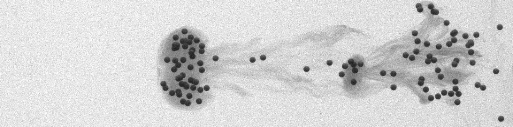
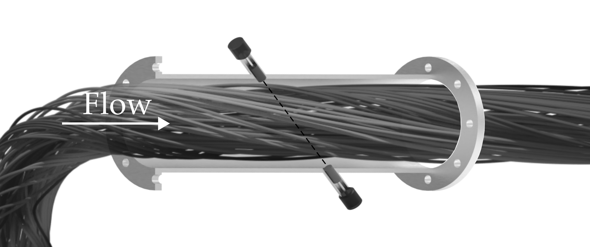
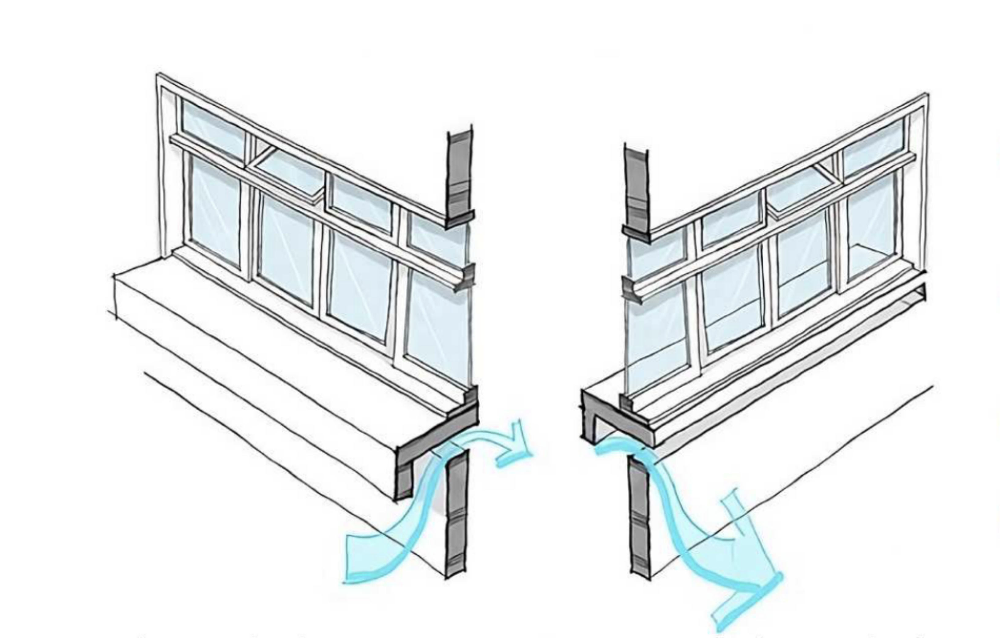

Research
This page presents selected research projects involving both computational and experimental approaches to fluid dynamics and complex flow phenomena, ranging from fundamental studies of flow behavior to applied research focused on improving industrial processes.

Interaction of a vortical structure and particles
This project investigates how inertial particles are transported by a coherent vortex ring using a combined experimental–numerical approach. The vortex ring serves as a canonical flow to isolate the physical mechanisms governing the interaction between vortices and particles, relevant to geophysical and industrial applications.
The study spans two complementary perspectives: the interaction between a single particle and a single vortex, leading to the identification of distinct interaction regimes (simple deviation, strong deviation, and capture), and the extension to collective transport and dispersion of multiple particles in particle-laden flows.
Methods: time-resolved PIV, shadowgraphy, and 3D particle tracking combined with direct numerical simulations implemented in Basilisk.
Outcomes: The identification of fundamental mechanisms governing the interaction of a single inertial particle and a vortex ring and the development of a particle–vortex interaction solver implemented in Basilisk.
Paper interaction regimes Basilisk solver
This work was conducted as part of my PhD research, in collaboration with Dr. Julie Albagnac and Dr. Sylvain Viroulet at (IMFT).

Improvement of ultrasonic flow meters using computational fluid dynamics
Ultrasonic flow meters are widely used in industrial applications due to their non-intrusive operation and broad applicability. Their accuracy, however, depends strongly on the flow conditions at the installation section. In practical systems, upstream fittings such as elbows, valves, and diameter changes often generate disturbed and asymmetric velocity profiles that challenge standard calibration assumptions.
This project explores computational fluid dynamics as a supporting tool for ultrasonic flow metrology. By numerically resolving disturbed pipe flows and performing virtual ultrasonic measurements along the acoustic path, the project examines how flow physics and numerical modeling choices influence the results of numerical simulations under non-ideal conditions.
Methods: RANS simulations of turbulent pipe flows, virtual ultrasonic-path integration, and statistical analysis, with extensions toward CFD–machine learning approaches.
Outcomes: validated numerical frameworks for disturbed-flow ultrasonic metering and methodological foundations for integrating CFD into industrial flow-measurement practice.
Review article Sensitivity analysis study RANS for pipe flow
This work was conducted in collaboration with Dr. Ramon Martins, Dr. Márcio Martins, and Prof. Rogério Ramos (NEMOG).
Effect of lateral confinement on stratified flow transitions
Numerical investigation of regime transitions in stratified inclined ducts, focusing on how finite channel width modifies laminar base flows, stability, and transition thresholds.
Methods: derivation of a three-dimensional semi-analytical laminar base flow, formulation of a width-averaged reduced model including side-wall friction, two-dimensional numerical simulations with adaptive mesh refinement, high–Schmidt-number interface resolution, stability and transition analysis using physically motivated control parameters.
Outcomes: implemented a width-averaged 2D solver in Basilisk with AMR and embedded boundaries, including a drag-law parametrisation of side-wall friction calibrated from the semi-analytical base flow; validated against analytical solutions and experiments, enabling high-Schmidt simulations (Sc up to ~700) and broad parameter sweeps at a fraction of 3D DNS cost.
This work was conducted as part of exchange period during my PhD at Eindhoven University of Technology (TuE, The netherlands) in collaboration with Dr. Matias Duran-Matute and Dr. Adrien Lefauve.
Simulation-based analysis of natural ventilation
Parametric numerical assessment of window and door designs to improve natural ventilation and thermal comfort in hot–humid climates.
Methods: building energy simulation (EnergyPlus/DesignBuilder), airflow network modeling, full-factorial parametric design, statistical evaluation of ventilation and comfort metrics.
Outcomes: identification of effective low-cost opening configurations (pivot windows, ventilated sills, half-doors), quantified reductions in thermal discomfort, design guidelines for naturally ventilated classrooms.
This work was perfomed in collaboration with Dr. Ramon Martins and Dr. Erica Pagel.
